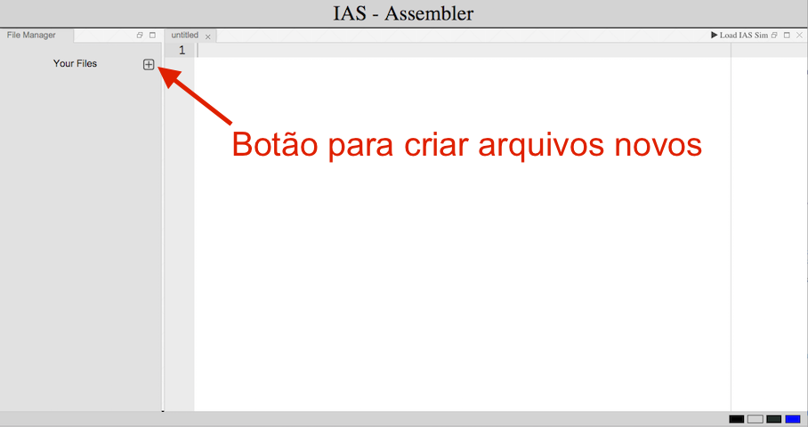
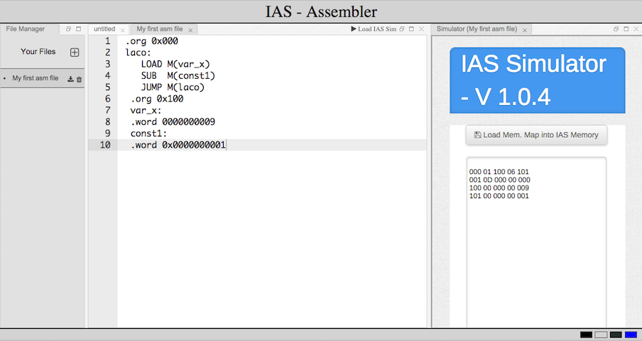
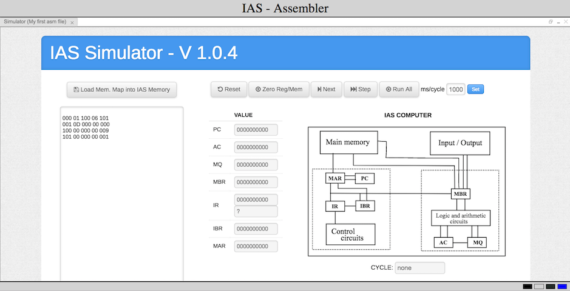

Atividade de Laboratório 4
Objetivos
O objetivo desta atividade é exercitar o conceito de programação por meio de linguagens de montagem. Você irá realizar a mesma atividade dos laboratórios 02 e 03, contudo, agora, utilizando de uma linguagem de montagem para o IAS
(definida na apostila) e um montador.
Utilizando o Montador
Para entender o funcionamento do montador, leia o exemplo a seguir de um código de montagem para IAS e reflita sobre as seguintes perguntas:
.org 0x000
laco:
LOAD M(var_x)
SUB M(const1)
JUMP M(laco)
.org 0x100
var_x:
.word 0000000009
const1:
.word 0x0000000001
- O que esse código faz?
- Como ficaria o mapa de memória para este código?
- Quais as principais vantagens em se escrever um código em linguagem de montagem?
Agora que você já refletiu sobre esse trecho de código em
linguagem de montagem, vamos montá-lo utilizando o montador
disponibilizado em:
assembler.html
-
Primeiro, crie um novo arquivo no editor online clicando no botão , indicado na figura abaixo:

-
Em seguida, copie o código acima para a janela de texto do editor e clique em Load IAS Sim.
Você irá perceber que o código foi traduzido para hexadecimal e inserido automaticamente como um mapa de memória na caixa de mapa de memória do simulador IAS.
O processo de tradução de um programa em linguagem de montagem (do inglês: assembly language) para linguagem de máquina é chamado de montagem e o programa responsável pelo processo de montagem é chamado de montador (do inglês: assembler).

-
Observe que a janela do simulador IAS pode ser aumentada ou destacada da aba utilizando-se os ícones ,
localizados no canto superior direito da tela. Clique no ícone do meio para maximizar o simulador.

-
Por fim, com o código em linguagem de máquina no simulador, clique no botão para carregar o programa na memória e
depois no botão para executar as instruções uma a uma.
Observe que é possível redimensionar a tela do simulador (você pode aumentar pela barra lateral ou maximizar o simulador).
Você já está apto a utilizar o nosso editor e montador! Agora, vamos ao exercício do laboratório. Obs.: seus arquivos são salvos localmente de maneira automática pelo editor. Entretanto, caso o cache do navegador seja apagado ou ocorra uma falha na sincronização de sua conta (cota de disco excedida no IC, por exemplo), eles podem ser perdidos.
Descrição
Escreva um programa em linguagem de montagem para o laboratório 2 e para o laboratório 3.
Submeta no Susy um arquivo para a solução de cada exercício.
ATENÇÃO: O mnemônico da instrução de modificação de endereço (p.ex: STOR M(X, 28:39))é STA.
Requisitos (ATENÇÃO!)
- O tamanho dos vetores deve ser lido da memória, no
endereço 0x3FF;
- Os vetores possuem pelo menos um elemento;
-
Os endereços dos vetores (endereços do primeiro elemento de cada
vetor) devem ser lidos da memória (endereços 0x3FD e 0x3FE);
-
Seu mapa de memória deve ser organizado em 3 partes:
- Na primeira parte há o código (instruções) e
dados;
- Na segunda parte (o "meio" do mapa de memória) estão
os 2 vetores;
- Nas 3 últimas posições estão armazenados os endereços
iniciais e o tamanho dos vetores, conforme explicado no
item acima.
Observe que, para submissão, somente a primeira parte será necessária;
-
Mantenha o código no início da memória. Em especial, não
escreva código a partir do endereço 0x100, pois
os scripts de teste utilizados para validação do seu
programa podem armazenar os vetores de teste nestas posições.
-
Termine a execução com um salto para o endereço 0x400;
-
Antes de terminar a execução, salve o resultado do produto escalar no registrador
AC. A corretude será verificada através da inspeção do valor neste registrador.
Dicas
-
Para avaliar seu programa, executaremos o mesmo com 10 entradas diferentes e verificaremos o resultado armazenado no registrador AC.
Avaliação
A avaliação do código gerado será realizada com o mecanismo de automação de testes do simulador IAS, disponível na página: http://www.ic.unicamp.br/~edson/disciplinas/mc404/2017-2s/abef/IAS-sim/testmodule.html. Veja uma explicação sobre este mecanismo na atividade de laboratório 2.
Os testes serão os mesmos dos laboratórios 2 e 3.
Entrega
Você deve submeter dois arquivo no SuSy, chamados
raXXXXXX-lab2.as e raXXXXXX-lab3.as, em que XXXXXX é seu RA
com 6 dígitos.
Endereço para a entrega da atividade no sistema SuSy: